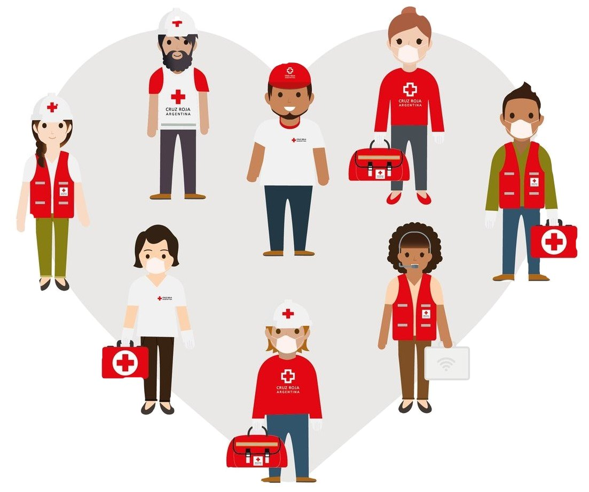

Quienes Somos
Somos parte del movimiento Internacional de Cruz Roja y Media Luna Roja, dedicada a auxiliar a víctimas de guerras o conflictos, personas afectadas por grandes desastres naturales, y a las víctimas en situaciones de emergencia masiva, sea en nuestro país, y en el mundo entero.

Salud y Seguridad
Generamos propuestas y damos acompañamiento a las actividades que se ejecutan en las comunidades de mayor vulnerabilidad, con el objetivo de contribuir a la mejora de condiciones básicas de salud.

Voluntario
El voluntariado es el serie de actividades y labores generales que brindan las personas empleando su tiempo de manera voluntaria y sin recibir remuneración alguna para el desarrollo de un bien común hacia los mas necesitados en tiempos de crisis.
